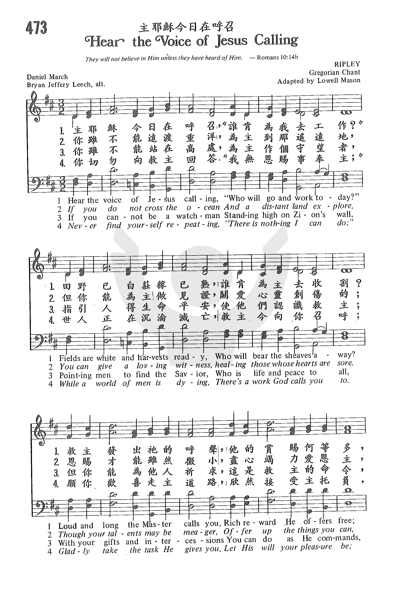
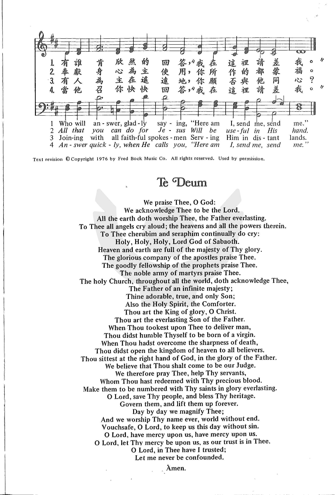

0990
Hear The Voice Of Jesus Calling _Daniel
March
主耶稣今日在呼召
|
|
|
|
1 Hark, the voice of Jesus crying,
"Who will go and work today?
Fields are ripe and harvests waiting;
who will bear the sheaves away?"
Loud and long the Master calleth;
rich reward he offers thee.
Who will answer, gladly saying,
"Here am I, send me, send me"?
2 If you cannot speak like angels,
if you cannot preach like Paul,
you can tell the love of Jesus,
you can say he died for all.
If you cannot rouse the wicked
with the judgment's dread alarms,
you can lead the little children
to the Savior's waiting arms.
3 If you cannot be a watchman,
standing high on Zion's wall,
pointing out the path to heaven,
off'ring life and peace to all,
with your prayers and with your off'rings
you can do what God demands;
you can be like faithful Aaron,
holding up the prophet's hands.
4 Let none hear you idly saying,
"There is nothing I can do,"
while the multitudes are dying,
and the Master calls for you.
Take the task he gives you gladly,
let his work your pleasure be;
answer quickly when he calleth,
"Here am I, send me, send me!"
Source: Christian
Worship: Hymnal #745
|
主耶穌今日在呼召 (Hear the Voice of Jesus Calling)
[1]
主耶穌今日在呼召，誰肯為我去工作
田野已白莊稼已熟，誰肯為主去收割
救主發出祂的呼聲，祂的賞賜何等多
有誰肯欣然的回答，我在這里請差我
[2]
你雖不能遠渡重洋，為主到那遙遠地
但你能為主做見證，關愛心靈創傷的
恩賜才能雖然微小，盡心竭力愛恩主
奉獻身心為主使用，你所作的都蒙福
[3]
你雖不能站在高處，為主作個守望者
指引人得生命平安，使他們認識救主
但你能為他人祈求，這是救主的命令
有人為主在遙遠地，你願否與他同心
[4]
你切勿向救主回答，我無恩賜事奉主
世人正在沉淪滅亡，救主今向你召呼
願你歡喜走主道路，欣然接受主托負
當祂召你快快回答，我在這里請差我
|
|
https://www.zanmeishige.com/tab/26048.html?songbook=1&index=473


|
|
|
|
0990
Hear The Voice Of Jesus Calling 主耶稣今日在呼召
|
Short Name: |
Daniel March |
|
Full Name: |
March, Daniel, 1816-1909 |
|
Birth Year: |
1816 |
|
Death Year: |
1909 |
March, Daniel,
D.D., an American
Congregational minister, b. July 21, 1816, has published Night
Scenes in the Bible, and other works. His hymn "Hark, the voice of
Jesus crying [calling]. Who will go," &c. (Missions), is given in
the American Methodist Episcopal Hymnal, 1878, in 2
stanzas; in Sankey's Sacred Songs & Solos, 1878, in 6
stanzas; and in the Scottish Hymnal 1884,
in 5 stanzas; in each case of 8 lines. It was written in 1863. (See Nutter's Hymn
Studies, 1884, p. 236.)
--John Julian, Dictionary
of Hymnology, Appendix, Part II (1907)
===============
March, D.,
p. 1578, ii. The following details concerning Dr. March's hymn, "Hark ! the
voice of Jesus crying," have been furnished us by himself:—
"It was written at the
impulse of the moment to follow a sermon I was to preach in Clinton St.
Church to the Philadelphia Christian Association on the text Is. vi. 8.
That was some time in 1868."
The original text in full
is in The Hymnal, (Presb.), Phila., 1895, No. 361. Dr.
March declines to accept the interpolations which have been made in this
hymn. We must note also that the incident given in Brownlie's Hymns
and Hymnwriters of the Church Hymnary (Scottish), p. 303, relative to
this hymn and President Lincoln, is incorrect. It relates to Mrs. E. Gates's
" If you cannot on the ocean," p. 1565, i. 5. [Rev. L. F. Benson, D.D.]
--John Julian, Dictionary
of Hymnology, New Supplement (1907)
This hymn was written…while the author was a pastor in Philadelphia [Pennsylvania].
On the 18th of October he was to preach, by request, to the Christian
Association of that city.
At a late hour he learned that one of the hymns selected was not
suitable…In great
haste,
he says, he wrote the hymn, and it was sung from the
manuscript.
Nutter, p. 214
Tune Information
|
Title: |
[Hark! the voice of Jesus calling] (Van Arsdale) |
|
Composer: |
P. P. Van Arsdale |
|
Incipit: |
32123 23565 56532 |
|
Key: |
G
Major or modal |
|
Copyright: |
Public Domain |
|
Short Name: |
P. P. Van Arsdalse |
|
Full Name: |
Van Arsdale, P. P. |
Hymnary.org does not have biographical information about this person.
"HARK! THE VOICE OF JESUS CALLING"
"The harvest truly is great, but the laborers are few…" (Lk.
10.2)
INTRO.:
A song which encourage us to be laborers in the Lord’s harvest is "Hark! The
Voice of Jesus Calling." The text was written by Daniel March, who was born on
July 21, 1816, at Millbury, MA, the son of Samuel and Zoa Park March, and grew
up on his father’s farm. At age seventeen, he entered the Millbury Academy, and,
after attending Amherst College, he traveled as a book agent and was principal
of Chester Academy in Vermont. Graduating from Yale University in 1840, he
served as principal of Fairfield Academy in Connecticut for three years during
which time he married Jane P. GiIson in 1841. Then he finished up his theology
studies at Yale and became a Congregational minister in 1845, working with
Congregational and Presbyterian Churches in Cheshire, CN; Nashua and Brooklyn;
NY; Philadelphia, PA; and Woburn, MA (serving twice, from 1856 to 1864 and again
from 1877 to 1895).
Intensely interested in missions, March visited many countries and was well
known for lecturing on his world travels, being awarded a D. D. degree from
Western University of Pennsylvania. His wife died in 1857, and he married Anna
B. Laconte in 1859. In 1868, he was invited to deliver a sermon to a
Philadelphia, PA, Christian Association meeting at the Clinton Ave.
Congregational Church with the text "Here am I; send me" (Isa. 6.8). Unable to
find a suitable hymn for the occasion, he penned this one which was first sung
from a manuscript and then published in the 1869 Bright
Jewels for Sunday School edited by Robert Lowry (1826-1899).
The first line, originally "Hark! the voice of Jesus crying," was changed to its
present form in the 1878 Hymnal
of the Methodist Episcopal Church. Other works by March include Night
Scenes in the Bible and Our
Father’s House or the Written Word, both published in 1869. His second wife
died in 1878, and March himself died on Mar. 2, 1909, at Woburn, MA.
Several melodies have been used with this hymn, but the song became best known
in our books with a tune (Martha) composed for this text by Elmer Leon Jorgenson
(1886-1968). It was first published in his 1937 Great
Songs of the Church No. 2. Among other hymnbooks published by members of
the Lord’s church during the twentieth century for use in churches of Christ,
the text appeared with a tune (Autumn) attributed to Francois H. Barthelmon in
the 1921 Great
Songs of the Church (No. 1) also edited by Jorgenson; and the
1963 Christian
Hymnal edited by J. Nelson Slater. The song with the Jorgenson
tune was used in the 1963 Abiding
Hymns edited by Robert C. Welch; and the 1966 Great
Christian Hymnal No. 2 edited by Tillit S. Teddlie. Today the
text is found with a tune (Unser Leben) of folk origin in the 1986 Great
Songs Revised edited by Forrest M. McCann; and the song with
the Jorgenson tune is found in the 1992 Praise
for the Lord edited by John P. Wiegand.
The song encourages us to do whatever we can in responding to the call of Jesus
to spread the word.
I. Stanza 1 tells us to listen to Jesus
"Hark, the voice of Jesus calling, ‘Who will go and work today?
Fields are ripe and harvests waiting, Who will bear the sheaves away?’
Long and loud the Master calls us, Rich reward He offers free;
Who will answer, gladly saying, ‘Here am I, send me, send me’?"
A. Jesus calls us to go work today in His vineyard: Matt. 21.28
B. He wants people to sow the seed and then to bear the sheaves away: Ps.
126.5-6
C. Rich rewards he offers to those work in the fields that are ripe for
harvest: Jn. 4.35-38
II. Stanza 2 tells us to help those around us and give what we can
"If you cannot cross the ocean, And the distant lands explore,
You can find the lost around you, You can help them at your door.
If you cannot give your thousands, You can give the widow’s mite;
What you truly give for Jesus Will be precious in His sight."
A. There is a need for some who are able and willing to cross the ocean to
preach the gospel to every creature: Mk. 16.15
B. However, not everyone can do that; but every child of God can go preaching
the word wherever he happens to be: Acts 8.4
C. Furthermore, even though not every Christian can give thousands, we can give
what we can like the widow: Lk. 21.1-4
III. Stanza 3 tells us to share the love of Jesus and lead even little children
to Him
"If you cannot speak like angels, If you cannot preach like Paul,
You can tell the love of Jesus, You can say He died for all.
If you cannot rouse the wicked With the judgment’s dread alarms,
You can lead the little children To the Savior’s waiting arms."
A. There is a need for some to "preach like Paul" in proclaiming the word
publicly: 2 Tim. 4.1-2
B. However, again, not everyone can do that, but everyone can tell the love of
Jesus and say that He died for all: 2 Cor. 5.10-15
C. Also, even if we are not successful in rousing the wicked, we can strive to
lead little children to know the Savior: Matt. 19.13-15
IV. Stanza 4 tells us to pray and hold up the hands of those who are preaching
the word
"If you cannot be the watchman, Standing high on Zion’s wall,
Pointing out the path to heaven, Offering life and peace to all,
With your prayers and with your bounties You can do what heaven demands;
You can be like faithful Aaron, Holding up the prophet’s hands."
A. There is a need for some to be watchment to stand on Zion’s wall and warn
people: Ezek. 33.1-11
B. However, not everyone is suited for such work, but everyone can pray for the
lost and for those who are warning them: Rom. 10.1, Eph. 6.18-20
C. In addition, we can be like faithful Aaron, and Hur, who held up Moses’s
hands: Exo. 17.8-13
V. Stanza 5 tells us to seek those who will listen, even young ones, and help
them win the crown of life
"If among the older people, You may not be apt to teach,
‘Feed My lambs,’ said Christ, our Shepherd, ‘Place the food within their reach.’
And it may be that the children You have led with trembling hand
Will be found among your jewels, When you reach the better land."
A. While there is no age limit to teaching and learning, it may be that some
who are younger may not feel comfortable teaching someone who is older because
under certain circumstances this might be considered not being submissive: 1
Pet. 5.5
B. However, those who are younger can look for the "lambs," those who are
closer to their own age and perhaps would more readily listen to them: Jn.
21.15-16
C. Thus it may be that even children whom we lead to the Lord will someday be
among the "jewels" that will await us as part of our crown in the better land:
Mal. 3.17, Phil. 4.1
VI. Stanza 6 tells us not to be idle but answer the call of Jesus to labor in
His vineyard
"Let none hear you idly saying, ‘There is nothing I can do,’
While the lost of earth are dying, And the Master calls for you.
Take the task He gives you gladly, Let His work your pleasure be;
Answer quickly when He calls you, ‘Here am I, send me, send me.’"
A. Thus, there is no call for anyone who claims to be a follower of Christ to
be idle, saying there is nothing to do: Matt. 20.1-7
B. We need to remember that the lost of earth are dying and need someone to
labor in the harvest: Matt. 9.36-37
C. Our attitude should be that of Isaiah, "Here am I, send me": Isa. 6.8
CONCL.:
The tune composed by Jorgenson is only four lines long, so it uses only half a
stanza. However, with repetition, the entire song could be sung with it. Many of
the great hymns of dedication and commitment to the Master’s service are no
longer popular. Today, we would rather sing a little ditty where we say, "Let’s
just praise the Lord" a dozen times. The reason may well be that the modern
"Christian" prefers a religion where he can come to church once a week, be in
the audience as a spectator, pay his "respects" to the Lord in as little time as
possible, and then go his way to do whatever he wants to do, rather than
striving to be active every day in looking for opportunities to teach the lost.
Each child of God needs to listen to the admonition, "Hark! The Voice of Jesus
Calling."
https://hymnstudiesblog.wordpress.com/2008/06/10/quothark-the-voice-of-jesus-callingquot/